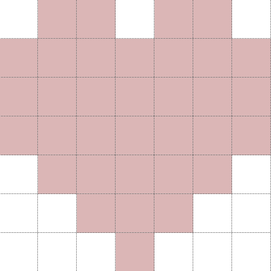

Hello, and welcome to my blog!
I made pots breakable and added screenshake and damage particle effects!
Breakable pots were easy, but the others were harder.
So I created a function called screenshake(), with this code:
#this requires that randint is imported from random
#In this code, screen is the display surface
def screenshake():
buffersurf = screen.copy()
screen.fill("black")
screen.blit(buffersurf, (randint(-10,10),randint(-10,10)))
This code creates a buffersurf variable which uses the screen's copy() method.
Then it fills the screen with black to ensure that when the buffersurf surface is blit, that the uncovered parts of the screen is black.
Then, it blits the buffersurf to the screen at a random offset between -10 and 10.
I made some code that appears when the player or an enemy gets hit:
for i in range(damage_done):
damage_particle.pos = [sprite.hitbox.center[0]+randint(-20,20),sprite.hitbox.center[0]+randint(-20,20)]
damage_particle.spawn_particle()
#This uses my custom Particle and Particlegroup classes
The for loop ensures that the more damage done, the more damage particles appear.
It sets the location that the particle will spawn in the loop to ensure that the particles will not clump together.
Then it spawns a particle. Its velocity y will be 1 and velocity x 0. Which makes a particle that slowly goes down.
This is the particle design that I use.
That's all!
-</qkuldo>